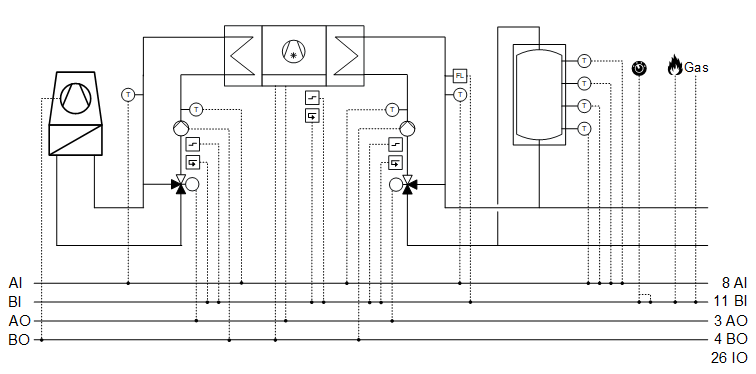
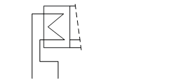
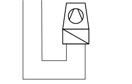
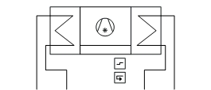
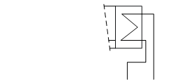

[CGen21] 制冷发电，1 台带外部压缩机控制的冷水机（在 /off 命令、设定值、反馈、常见故障上）、冷冻水储罐
工厂示例 CGen21 有一台带外部冷却组控制、压缩机控制和冷冻水储罐的冷水机。
Functions
- Collects cooling requests
- Charges storage tank
- Controls chiller
Plant diagram

Components
- Chilled water storage tank with four sensors
- Interface to external cooling group control
- Hydraulics for evaporator group
- Hydraulics for condenser group
- Recooling command
Components and functions
设备示例的组件和功能：
成分 | 功能 | BACnet object |
|---|---|---|
Gas | Gas detector 此__VAR_000__中，风道面积仅供用户参考；它不用于阻尼器位置计算。没有系数对象或系数计算逻辑。 | [BI]Gas detector |
Fire detection contact 此__VAR_000__中，风道面积仅供用户参考；它不用于阻尼器位置计算。没有系数对象或系数计算逻辑。 | [BI]Fire detection contact | |
| Operating mode switch 将工厂切换至：Auto | Off | On | [MI]Operating mode switch |
| Manual operating mode selection 将工厂切换至：Auto | Off | On | [MCnfVal]Manual operating mode selection |
| Present operating mode 报告当前操作模式：Off | On | [MCalcVal]Present operating mode |
| Reason for present operating mode 报告当前操作模式的原因：Exception | Operating mode switch | Manual operating mode selection|冷却要求|冷冻水储罐请求 | [MCalcVal]Reason for present operating mode |
Cooling request 获得冷却需求。 如果一个或多个冷却请求待处理并且冷冻水储罐已排出，则设备会启动。 仅当冷冻水储罐充满水后，设备才会关闭。 | ||
Setpoints 制冷发电具有可调节冷冻水储罐中冷冻水温度的设定点。 冷水机中的外部冷却组控制将蒸发器的出口温度控制在设定点，该设定点减去冷冻水温度的增量设定点。 | [ACnfVal] 冷冻水温度设定值 [ACnfVal] 冷冻水温度增量设定值 |

Chiller
成分 | 功能 | BACnet object |
|---|---|---|
| Chiller 包括蒸发器液压系统、外部压缩机控制接口和冷凝器液压系统。 |
|
 | Condenser 控制冷凝器液压系统。 |
|
| Outlet temperature on the condenser 测量出口温度。 | [AI]Outlet temperature |
| Inlet temperature on the condenser 测量入口温度。 | [AI]Inlet temperature |
Setpoint for minimum inlet temperature to the condenser 指定最低入口温度。 | [ACnfVal] 最小值入口温度设定值 | |
Pump |
| |
命令 根据需要打开/off 泵。 | > [BO] Command | |
故障信息 报告故障。 此__VAR_000__中，风道面积仅供用户参考；它不用于阻尼器位置计算。没有系数对象或系数计算逻辑。 | > [BI] Fault | |
反馈留言 监控反馈并关闭工厂。 | > [BI] 反馈 | |
| Mixing valve 在入口处，它混合来自出口的所需量的水，以达到所需的入口温度。 |
|
温度控制器 控制入口温度。 | > [控制器]Temperature controller | |
定位 0% = Bypass … 100% = 直通端口 | > [AO]Position | |
 | Request to recooling 重新冷却的二进制请求 | > [BO] 重新冷却命令 （位于 |
 | Interface to external cooling group control |
|
发布 释放外部控制 | > [BO] Command | |
冷凝器出口温度设定值 将温度设定点传输至外部控制。 | > [AO]Temperature setpoint | |
故障信息 报告故障。 此__VAR_000__中，风道面积仅供用户参考；它不用于阻尼器位置计算。没有系数对象或系数计算逻辑。 | > [BI] Fault | |
反馈，二进制 计算营业时间。 | > [BI] 反馈 | |
 | Evaporator 控制蒸发器液压系统。 |
|
Flow monitoring on evaporator 监控蒸发器上的流量。 此__VAR_000__中，风道面积仅供用户参考；它不用于阻尼器位置计算。没有系数对象或系数计算逻辑。 | [AI]Flow detector | |
Outlet temperature on evaporator 测量出口温度。 | [AI]Outlet temperature | |
Inlet temperature on evaporator 测量入口温度。 | [AI]Inlet temperature | |
| Pump |
|
命令 根据需要打开/off 泵。 | > [BO] Command | |
故障信息 报告故障。 此__VAR_000__中，风道面积仅供用户参考；它不用于阻尼器位置计算。没有系数对象或系数计算逻辑。 | > [BI] Fault | |
反馈留言 监控反馈并关闭工厂。 | > [BI] 反馈 | |
Mixing valve 在入口处，它混合来自出口的所需量的水，以在出口处达到所需的冷冻水温度设定点。 |
| |
温度控制器 控制出口温度。 | > [控制器]Temperature controller | |
定位 0% = Bypass … 100% = 直通端口 | > [AO]Position |
 Chiller (
Chiller (


Chilled water storage tank
成分 | 功能 | BACnet object |
|---|---|---|
| Chilled water storage tank 冷冻水储罐配有四个传感器和充电逻辑。 温度 (1) 是最高温度测量值，温度 (4) 是最低温度测量值。 收费： 如果温度 (3) 高于冷冻水温度设定点，则储罐放电并需要充电。 带电： 如果温度 (1) 存在切换差异，例如 100℃，则储罐充电。 1K，低于冷冻水温度设定值。 |
[ACalcVal]Present temperature setpoint [AI] 温度 (1) [AI] 温度 (2) [AI] 温度 (3) [AI] 温度 (4) |

Chiller with external control of the compressor, hydraulics for the evaporator and condenser group
操作模式：关、开
Components, sequence, and function in CMDSEQ_B
工厂运行模式 | 成分 | ||
|---|---|---|---|
| 镉 | 执行副总裁 | RfCrtExtCtl |
Off | 离开 | 离开 | 离开 |
On | On | On | On |
| |||
Sequences |
| ||
启动顺序 | 1 | 2 | 3 |
启动功能 | 延迟 | 延迟 | AND （具有下一个聚合的组） |
启动延迟 | 30 s | 30 s | - |
| |||
停止顺序 | 3 | 2 | 1 |
停止功能 | AND （具有下一个聚合的组） | 延迟 | 延迟 |
停止延迟 | - | 30 s | 30 s |
[CMDSEQ_B] Command sequence for binary
Start sequence
- The hydraulics for the condenser group switch on with a delay of 30 seconds (function Delay).
- The hydraulics for the evaporator group switch on with a delay of 30 seconds (function Delay).
- External cooling group control switches on.
Stop sequence
- External cooling group control switches off with a delay of 30 seconds (function Delay).
- The hydraulics for the evaporator group switch off with a delay of 30 seconds (function Delay).
- The hydraulics for the condenser group switch off.
Controller
姓名 | 描述 | 对象类型 | 默认值 |
|---|---|---|---|
Ch'Evp'Vlv'TCtr | 冷水机、蒸发器、阀门温度控制器 控制蒸发器出口温度。 | 控制器 | N/A |
温度控制器充当 PI 控制器，将冷却器的温度设定点 [SpTChw] 与蒸发器的出口温度 ['Evp'T] 进行比较，并计算阀门位置的调节控制 [Ch'Evp'Vlv'Pos]。 预设了以下控制器变量： | |||
Ch'Cds'Vlv'TCtr | 冷水机、蒸发器、阀门温度控制器 控制冷凝器入口温度。 | 控制器 | N/A |
温度控制器充当 PI 控制器，将冷凝器上的最小入口温度设定值 [Ch'Cds'SpTInMin] 与冷凝器上的入口温度 [Ch'Cds'TIn] 进行比较，并计算阀门位置的调节控制 [Ch'Evp'Vlv'Pos]。 预设了以下控制器变量： | |||
工厂运行模式：
- Off (1)
- On (2)
操作模式在 [MCalcVal] 对象“当前操作模式”上报告。
同时，将当前操作模式的原因报告给另一个 [MCalcVal] 对象：
- Exception (1)
- Operating mode switch (2), resulting from an active (not equal to Auto) operating mode switch
- Operating mode (3), resulting from an active (not equal to Auto) manual operating mode selection
- Cooling request (4)
- Request from chilled water storage tank (5)
有正常模式和异常模式。
Normal mode
正常模式的来源：
- [MI] Operating mode switch
- [MCnfVal] Manual operating mode selection
- [CReq (1)] Cooling demand
- Request from chilled water storage tank
在正常模式下，在操作模式“On”下，冷水机组通过功能块 CMDSEQ_B 开启。
[CMDSEQ_B] Command sequence for binary
Exception mode
异常模式的来源：
- Fire detection contact
- Gas detector
- Chiller faults:
- Fault on or missing feedback from the evaporator pump
- No flow in evaporator circuit
- Fault to external cooling group control
- Fault on or missing feedback from the condenser pump
在异常模式下，所有输出均以优先级 5 直接关闭，并且当前操作模式设置为“关闭”。
它在冷却器上 CMDSEQ_B 的输入 [RpdOff] 处报告。
Start-up control (nested chart SttUpAlmHdl)
以下功能可用于设备的自动启动，例如断电和恢复供电后：
- Fixed switch-on delay (can be set on input pin [DlySttUp])
- The plant remains off to ensure communications are reliable and cross-check references are triggered. 'Exception' is reported as the reason for the present operating mode.
- Automatic acknowledge (2x) of possible pending alarms during a fixed switch-on delay.
- Additional adjustable delay for staged plant ramp-up (can be set on input pin [DlyOn])
Alarm handling (nested chart SttUpAlmHdl)
工厂事件的状态通过 BACnet 对象“工厂状态”获取。状态映射到功能块 CMN_EVT 上。
[CMN_EVT] Common event
可以使用以下功能：
- Automatic acknowledge (2x) after startup
- Alarm acknowledgement with a value object
- Alarm indication:
- For pending alarms On
- For unprocessed alarms flashing - Ability to connect the acknowledge button [BI]
- Ability to connect to an alarm indication [BO], e.g. an alarm lamp through an output block [BO]
- Ability to connect to other alarm handling functions on other plants, e.g. acknowledge button and alarm indication for multiple plants in the same control cabinet
姓名 | 描述 | 类型 | Signal/connection | 状态文本 | 工程单位 |
|---|---|---|---|---|---|
FireDetCont | Fire detection contact 报警功能：扩展（通知等级 7） 参考值：Tripped 时间偏差：0[s] | BI | NC contact | Normal | Tripped | N/A |
GasDet | Gas detector 报警功能：扩展（通知等级 7） 参考值：Tripped 时间偏差：0[s] | BI | NC contact | Normal | Tripped | N/A |
OpModSwi | Operating mode switch | MI | N/A | 汽车 |关闭 |在 | N/A |
Ch'Cds'TIn | 冷水机冷凝器入口温度 | AI | LG-Ni1000 | N/A | 0...100 [°C] |
Ch'Cds'TOut | 冷水机冷凝器出口温度 | AI | LG-Ni1000 | N/A | 0...100 [°C] |
Ch'Cds'Pu'Cmd | 冷水机冷凝泵命令 报警功能：扩展（通知等级 7） 参考值：Ch'Evp'Pu'Fb 时间偏差：10[s] | BO | NO contact | 关闭 |在 | N/A |
Ch'Cds'Pu'Fb | 冷水机冷凝泵反馈信息 | BI | NO contact | 关闭 |在 | N/A |
Ch'Cds'Pu'Flt | 冷水机冷凝泵故障 报警功能：扩展（通知等级 7） 参考值：Tripped 时间偏差：0[s] | BI | NO contact | Normal | Tripped | N/A |
Ch'Cds'Vlv'Pos | 冷水机冷凝器阀门位置 | AO | 0...10V | N/A | 0...100 [%] |
Ch'Cds'ReCCmd | 冷水机冷凝器再冷却命令 | BO | NO contact | 关闭 |在 | N/A |
Ch'RfCrtExtCtl'Flt | 外冷组控制压缩机故障 报警功能：基本（通知等级 8） 参考值：Tripped 时间偏差：0[s] | BI | NO contact | Normal | Tripped | N/A |
Ch'RfCrtExtCtl'Fb | 外冷组控制压缩机反馈信息 | BI | NO contact | 关闭 |在 | N/A |
Ch'RfCrtExtCtl'SpT | 外部冷却组控制压缩机温度设定值 | AO | 0...10V | N/A | 0...20 [°C] |
Ch'RfCrtExtCtl'Cmd | 外部冷却组控制压缩机命令 | BO | NO contact | 关闭 |在 | N/A |
Ch'Evp'FlDet | 冷水机蒸发器流量检测仪 报警功能：扩展（通知等级 7） 参考值：Tripped 时间偏差：10[s] | BI | NO contact | Normal | Tripped | N/A |
Ch'Evp'TIn | 冷水机蒸发器入口温度 | AI | LG-Ni1000 | N/A | 0...100 [°C] |
Ch'Evp'TOut | 冷水机蒸发器出口温度 | AI | LG-Ni1000 | N/A | 0...100 [°C] |
Ch'Evp'Pu'Cmd | 冷水机蒸发泵命令 报警功能：扩展（通知等级 7） 参考值：Ch'Evp'Pu'Fb 时间偏差：10[s] | BO | NO contact | 关闭 |在 | N/A |
Ch'Evp'Pu'Fb | 冷水机蒸发泵反馈信息 | BI | NO contact | 关闭 |在 | N/A |
Ch'Evp'Pu'Flt | 冷水机蒸发泵故障 报警功能：扩展（通知等级 7） 参考值：Tripped 时间偏差：0[s] | BI | NO contact | Normal | Tripped | N/A |
Ch'Evp'Vlv'Pos | 冷水机蒸发器阀门位置 | AO | 0...10V | N/A | 0...100 [%] |
ChwStk'T(1) | 冷冻水储罐温度(1) | AI | LG-Ni1000 | N/A | 0...100 [°C] |
ChwStk'T(2) | 冷冻水储罐温度(2) | AI | LG-Ni1000 | N/A | 0...100 [°C] |
ChwStk'T(3) | 冷冻水储罐温度（3） | AI | LG-Ni1000 | N/A | 0...100 [°C] |
ChwStk'T(4) | 冷冻水储罐温度 (4) | AI | LG-Ni1000 | N/A | 0...100 [°C] |